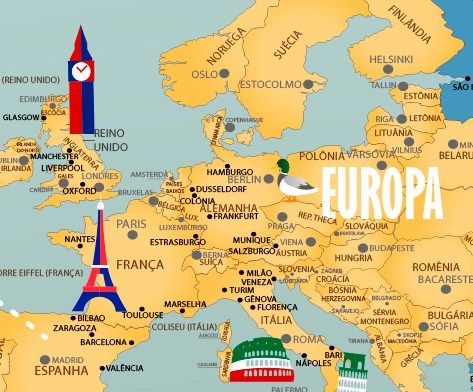

A cozinha francesa é considerada uma das melhores do mundo. Os franceses são conhecidos por sua paixão por comida e vinho. Pratos como croissant, queijo, vinho, escargot, coq au vin e ratatouille são apenas alguns exemplos da culinária francesa.

A França